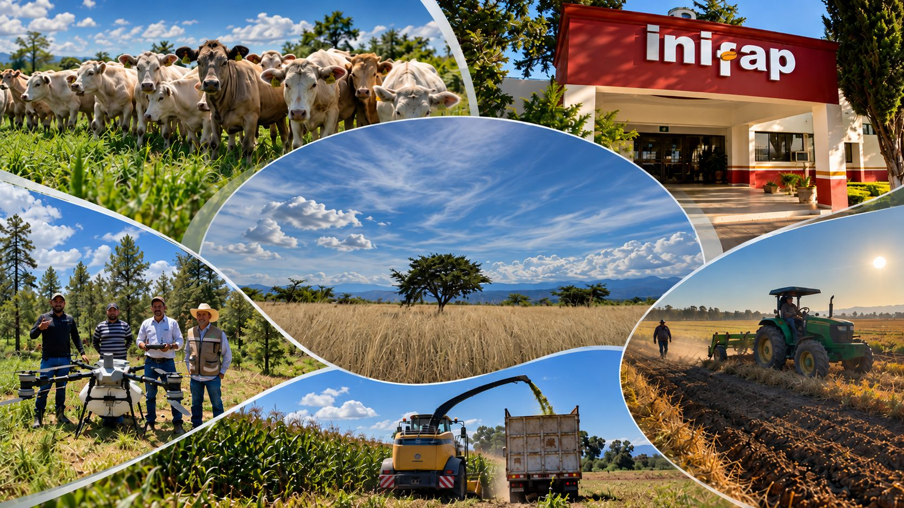
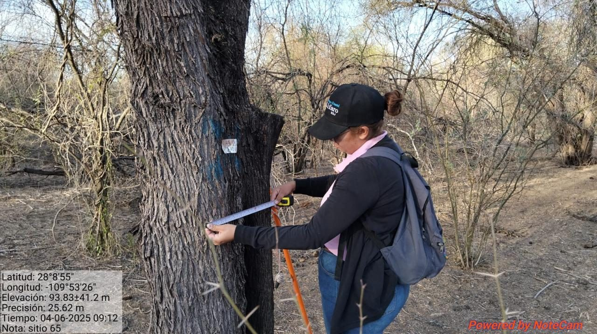
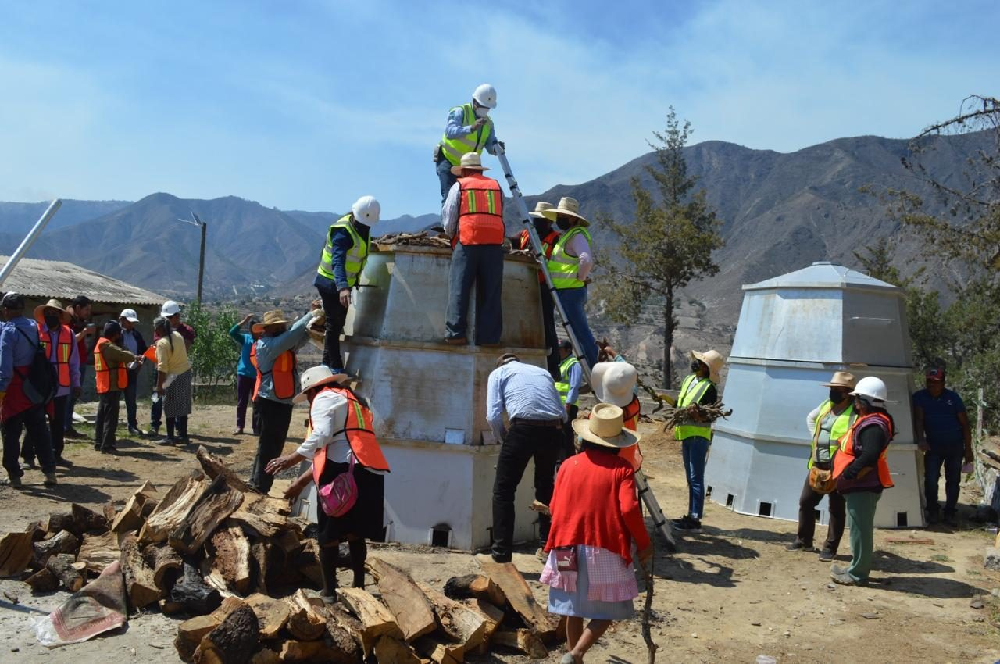
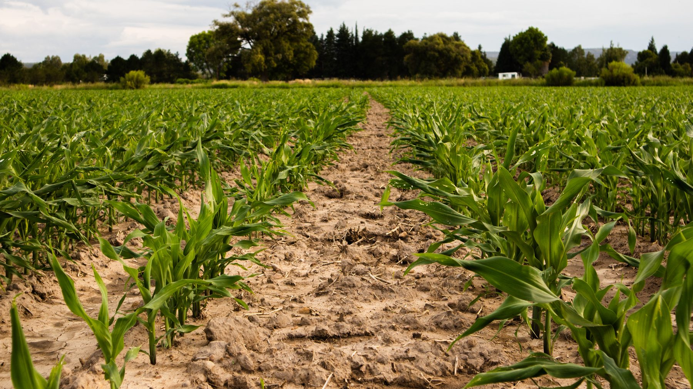
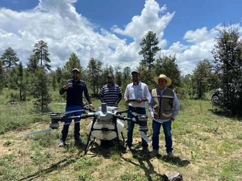

CATÁLOGO DE PRODUCTOS Y SERVICIOS
Campo Experimental Valle del Guadiana
INIFAP Durango
¿Qué hacemos?
El INIFAP es una institución de excelencia científica y tecnológica, con reconocimiento nacional e internacional, que genera conocimiento e innovaciones para el sector forestal, agrícola y pecuario. Desde 1985 trabaja con personal capacitado e infraestructura de vanguardia para atender las necesidades de los productores del país.
Objetivo
Contribuir al desarrollo rural sustentable mejorando la competitividad y manteniendo la base de recursos naturales, mediante un trabajo participativo y corresponsable con otras instituciones y organizaciones públicas y privadas asociadas al campo mexicano, mediante la generación de conocimientos científicos y de la innovación tecnológica agropecuaria y forestal, como respuesta a las demandas y necesidades de las cadenas agroindustriales y de los diferentes tipos de productores.
Misión
Generar conocimientos, tecnologías e innovaciones, a través de la investigación científica, aplicados a los sistemas de producción forestal y agroalimentarios.
Visión
Institución líder de excelencia científica y tecnológica que contribuya al equilibrio entre el desarrollo económico, el bienestar social y la protección ambiental, en beneficio de las generaciones presentes y futuras.

Política de Calidad Institucional
Impulsar la innovación con conocimientos y soluciones tecnológicas generadas a través de la investigación, que contribuyan al desarrollo sostenible de las cadenas agroalimentarias y sistemas forestales, basado en la satisfacción de los requerimientos y expectativas de clientes y grupos de interés; fomentando una cultura de Calidad Total.

Productos
Semillas mejoradas de frijol y otros materiales agrícolas, además de tecnologías y paquetes de recomendaciones para el manejo de cultivos.
Ver catálogo de productos →
Servicios
Capacitación, cursos y talleres, demostraciones en campo, asesoría técnica y evaluación de variedades y productos agrícolas.
Ver catálogo de servicios →
¿Sabías que?
- El INIFAP es el primer centro público de investigación mexicano certificado por la calidad en la gestión de sus proyectos.
- Desde 1985, el INIFAP genera conocimiento y tecnología para el campo mexicano en los sectores forestal, agrícola y pecuario.
- Las semillas certificadas garantizan calidad genética, pureza y capacidad de germinación, lo que ayuda a obtener mejores cosechas.
¿Tienes alguna duda?
Para mayor información general, comunícate con nosotros. Si tu duda es sobre un producto o servicio en específico, puedes cotizarlo directamente desde su catálogo.
Puedes visitarnos en:
INIFAP Campo Experimental Valle del Guadiana
Carretera Durango–El Mezquital Km 4.5, C.P. 34170,
Durango, Dgo., México
Dr. Rafael Jiménez Ocampo
Responsable de vinculación (DICOVI Durango)
jimenez.rafael@inifap.gob.mx
Teléfono: (55) 3871 8700, ext. 82701
Horario de atención: lunes a viernes, de 8:00 a.m. a 4:00 p.m.